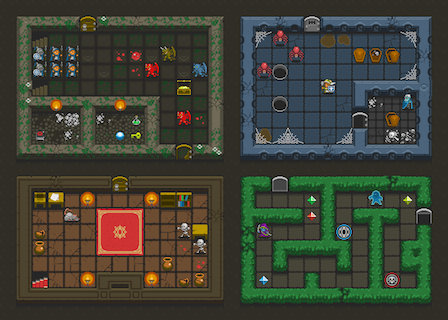
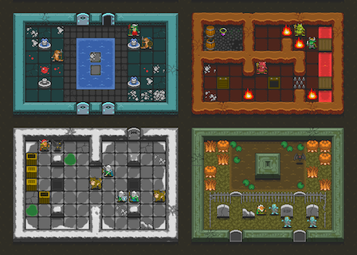

Unreal Engine 4 - Roguelike
I’ve been working on Armored Bits for about a year and half now and it’s coming along quite well. After this latest server refactor the game should be programmable (playable) before the year is out. My Haskell programming skills have skyrocketed, and all is well with the world. Still, eating vanilla ice cream and never mixing it up with strawberry or chocolate on occasion can get a bit dull.
With that in mind, I’ve started a small side project in an attempt to fulfill two goals. 1) Learn Unreal Engine 4, and 2) build a roguelike of sorts. This blog post is hopefully the beginning of documenting that process.
The Gimmick
I want a roguelike I can play in 5 minutes. It occurred to me that I could keep the turn based mechanics of a standard roguelike and mix it up by setting a global realtime 5 minute timer within which the player has to beat the quest objective for that randomly generated run. Could be fun? I hope? The goal is to build a game where the player has to balance efficient hero building and leveling while trying to reach the end goal in a reasonable amount of time, hopefully giving a fun sense of urgency, but not a panic induced rush to the end.
(I’m not 100% sure about 5 minutes, that’s just the number that has been in my head.)
Assets
First of all I wanted something that looked visually pleasing. After hunting around Open Game Art a bit, which is full of a lot of incredible art with various licenses, I eventually went off and bought these beautiful tiles from Oryx for $35 USD.
|  |  |
UE4 Sprites
Importing and building sprites in UE4 is actually pretty straightforward and painless. You simply import all of the images which automatically get turned into textures, then you select all of those and turn them into sprites. Thankfully the Oryx pack had both sprite sheets and single cut versions of each tile, the latter of which turned out necessary to have.
Generating Rooms
In the following screenshot I’ve built a layered Tile Set using the huge world sprite sheet. What this allows me to do is randomly generate dungeons using one of the 23 different room tile sets and get different visual results by simply passing in a different layer id.
The Blueprint to kick off randomly generating a dungeon:
Note that it’s very rough right now and is simply dumb logic which builds a small single test room. Near future goals are to generate a handful of rooms, spread them out, and then tunnel them together, add doors, etc.
This next Blueprint is how I pull the right assets together. It builds a new Tile Set for the room, and then another function builds an equally sized Tile Set and places ambient sprites like cobwebs and stacks it over the room Tile Set. The sub-functions in here are simply accessors which pull the correct sprite out of the Room Tile Set mentioned earlier by the layer id.
Animating Creatures
Building animations (Flipbooks) or Tile Sets from a lot of single sprites can be very tedious. I really wish I could have just selected the 2 frame animations out of a sprite sheet, but I ended up having to use the sliced sprites to manually build the 200 creature animations. Needless to say this took a few hours to complete.
Random Items
Rather than optimally pull items from a single sprite sheet -> Tile Set, which I originally started doing, it was just way too tedious to build. I opted to import every item as a single sprite instead. Honestly, I don’t see the draw call count of this game going over 100 on a very busy screen, if that, so I opted to not needlessly spend a lot of time on pre-optimization.
I still need to consider how I am even going to utilize items in the game. More than likely it’ll be super basic RPG mechanics everyone knows and loves (I’m kind of in the hate category, but that’s a story for another day). My current train of thought is to simply use the factory I’ve built to get a random item, and then assign basic properties to it relevant to the level/area it was acquired.
UI
Finally one needs a UI to actually navigate through the game.
I have some nice Init Level -> Hero Select Level -> Dungeon Level flow going so far. Compared to Unity3d, which I’ve been using on and off for about 5 years now, the UI stuff in UE4 has actually been quite a breeze. Interacting with everything via Blueprints has really been a good experience so far.
Conclusion
Not bad for 2 weekends and a few nights of work, eh? There’s still a long way to go before I have something actually playable to show off, but I’m fairly satisfied with how far I’ve come in such a short time. My goal is to simply keep hammering away at it every day, whether it’s to add a couple more sprites in, or quickly knock out a new Blueprint script to do some trivial task.
Now if the damn UE4 editor would stop crashing 20 times per day (I am not even joking), and I can figure out this issue I have about selecting Blueprint classes. Without a fix I have no way to build a GameInstance Blueprint to handle persistent data between levels, like which hero was selected, etc, nor can I add a GameSave instance to record scores and stats. Worst case scenario I may have to setup Windows and see if things work there.